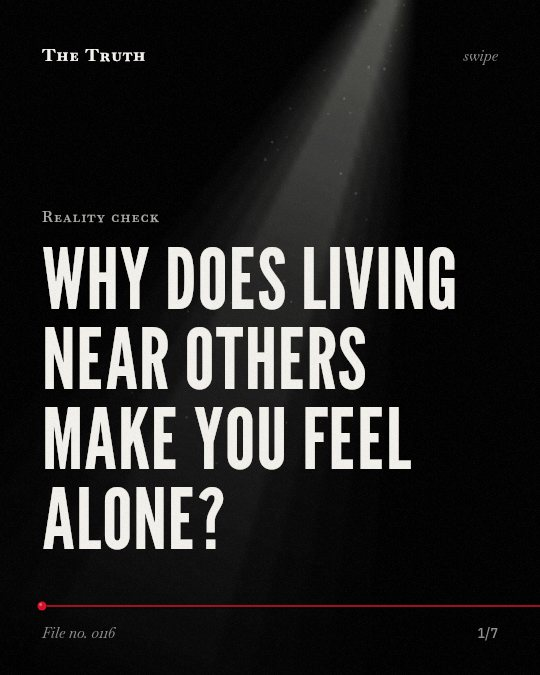

Reality check
Why does living near others make you feel alone?

Urban density is linked to psychogenic disease.
Living in dense urban areas can create conditions that provide initial stimulation for mass psychogenic disease.
Supported. At least one solid peer-reviewed study. The evidence is mixed.
What the research found
Isolation of large populations in dense urban areas is linked to a condition that could provide initial stimulation for Mass Psychogenic Disease.
“Isolation of mass populations in typically dense urban areas are examined as an unusually condition that could form initial stimulation for MPD.”
Study, 2020. Caldararo, Insights of Anthropology.
Living in a single elderly household in a detached house is linked to a higher risk of dying from heatwaves.
“Further, the lower percentage of single elderly households living in detached houses was also related to higher heatwave-related mortality risk.”
Study, 2020. Kim et al., Environment International.
The impact of population density and social fragmentation on the risk of psychosis is linked to individual-level factors like social adversity, exclusion, and discrimination.
“Evidence further suggests that the impact of adverse social contexts - indexed by area-level exposures such as population density, social fragmentation and deprivation - on risk of psychosis is explained (confounding) or modified (interaction) by environmental exposures at the individual level (i. e. , cannabis use, social adversity, exclusion and discrimination).”
Study, 2013. Heinz et al., World Psychiatry.
The burden of social-distancing measures in dense environments is linked to a lack of equitable access to urban services and green infrastructures.
“Instead, more attention should be paid to the types/conditions of density and the equitable access to urban services and green infrastructures in order to minimise risks and lower the burden of social-distancing measures in dense environments.”
Study, 2021. Teller, Buildings and Cities.
Higher levels of social gathering and mutual aid are linked to a lower risk of dying from heatwaves.
“Our findings showed that higher social gathering and mutual aid levels were associated with lower heatwave-related mortality risk.”
Study, 2020. Kim et al., Environment International.
Social isolation is linked to increased vulnerability to heatwave-related mortality for elderly people living in cities.
“Our findings suggest that vulnerability to heatwave-related mortality among the urban, city-dwelling, elderly population may be amplified by higher isolation indicators.”
Study, 2020. Kim et al., Environment International.
Density is not the only factor.
The impact of urban density on mental health is linked to individual factors like discrimination and exclusion. Access to green infrastructure and mutual aid also influences these outcomes.
Environment shapes your social safety.
That may be why your sense of isolation depends on more than just the number of people nearby. It is linked to how you access services and your personal social experiences.
This part is our reading of the evidence, not a finding.
A crowded subway car.
You stand shoulder to shoulder with strangers. No one speaks. You are surrounded by people but feel entirely alone in the crowd.
The honest summary
The evidence shows that urban density is associated with social isolation and health risks, but these outcomes are often mediated by social support systems and specific environmental conditions.
The sources primarily focus on specific outcomes like heatwave mortality, psychosis, and psychogenic disease rather than providing a direct measure of general 'loneliness'.
Who do you rely on when the heat rises?
Sources
- Andreas Heinz, Lorenz Deserno, Ulrich Reininghaus (2013). Urbanicity, social adversity and psychosis. World Psychiatry. Study, cited 233 times.
- Niccolo Caldararo (2020). Covid-19, Isolation, Mammalian Dispersal Patterns, Urban Density, Social Distancing and Mass Psychogenic Disease. Insights of Anthropology. Study, cited 2 times.
- Jacques Teller (2021). Urban density and Covid-19: towards an adaptive approach. Buildings and Cities. Study, cited 102 times.
- Yong-Ook Kim, Whanhee Lee, Ho Kim et al. (2020). Social isolation and vulnerability to heatwave-related mortality in the urban elderly population: A time-series multi-community study in Korea. Environment International. Study, cited 109 times.
Also read for this file, not quoted
- Grela et al. (2024). Urban and Rural Environments and Their Implications for Older Adults’ Adaptation to Heat Waves: A Systematic Review.
- Rinkinen et al. (2021). Conceptualising urban density, energy demand and social practice.
This file was researched and drafted by software, then checked by rules a model cannot talk its way around: each quote above was matched word for word against the paper, and every number had to appear in it. How files are made.